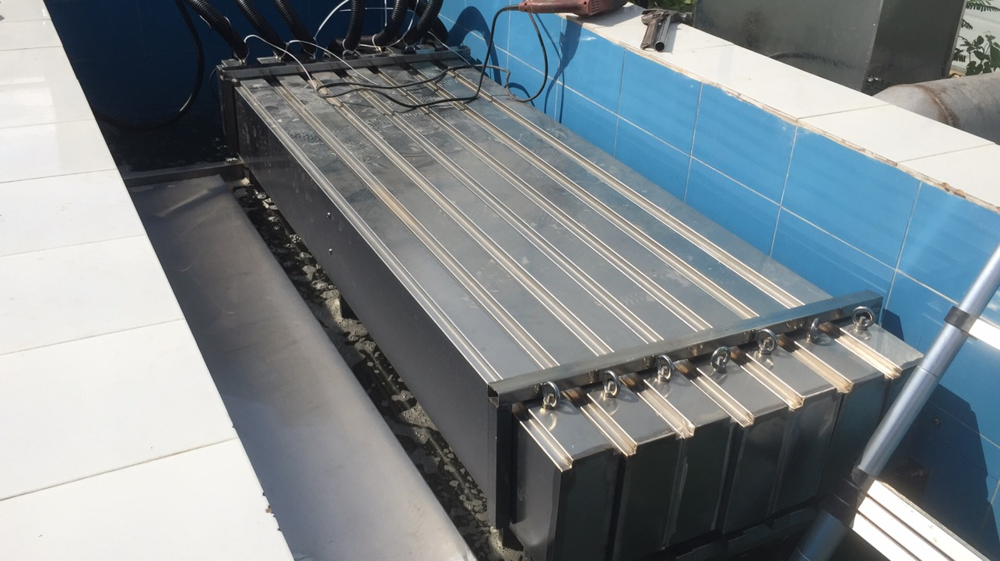
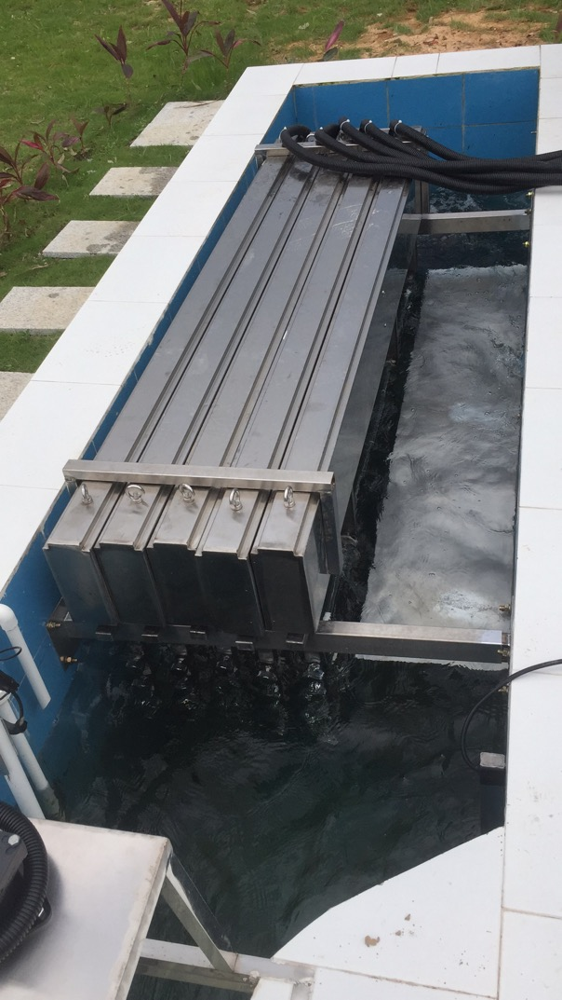
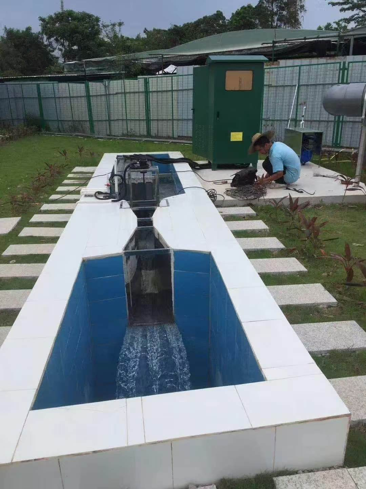

Open-Channel UV Disinfection for Two Municipal Wastewater Plants in South China
Case published 21 September 2026 · Client and exact site anonymized
- Project location
- South China — two municipal wastewater treatment facilities
- Water duty
- Disinfection of secondary-treated domestic wastewater before discharge
- Original design target
- China Grade 1A municipal wastewater effluent requirement
- Capacity
- 5,000 m³/d + 15,000 m³/d (20,000 m³/d combined), 24-hour operation
- Technology
- Open-channel UV — 12 modules, 76 × 320 W high-output low-pressure lamps
- Control
- PLC with touchscreen HMI, UV intensity monitoring, water-level sensing and per-lamp fault alarms
- Project scope
- Equipment supply for an environmental engineering company, with delivery to site and installation guidance
Project background
In 2019, KONCHE designed and supplied the final UV disinfection stage for two domestic-wastewater treatment facilities in South China. The two plants required different capacities — 5,000 m³/d and 15,000 m³/d — but the environmental engineering company wanted a common equipment platform that would simplify installation, controls and replacement-parts management.
The original design followed the China Grade 1A municipal wastewater effluent target specified for the project. The design basis required 24-hour operation and a minimum wastewater UV transmittance of 65%. Because suspended solids can shield microorganisms from UV light, upstream filtration was recommended to keep TSS at or below 10 mg/L before the disinfection channel.
Engineering requirements
- Two capacities on one component platform. The systems needed different module arrangements while retaining common lamp, sleeve and ballast types.
- UV-ready secondary effluent. The design had to account for minimum UV transmittance and the shielding effect of suspended solids.
- Outdoor installation. The UV modules, control equipment and cabling were configured for open-channel plant conditions.
- Low routine maintenance. Automatic sleeve wiping, per-lamp monitoring and accessible modules reduced the operator workload.
- Defined civil interfaces. Equipment and channel dimensions had to be confirmed before site construction and installation.
The supplied systems
KONCHE configured two open-channel UV systems around the same 320 W lamp, quartz-sleeve and ballast platform. Four-lamp and eight-lamp module arrangements matched the two treatment capacities:
| Configuration | 5,000 m³/d plant | 15,000 m³/d plant |
|---|---|---|
| System model | KCW-UV6.4KW | KCW-UV17.92KW |
| 316 stainless steel UV modules | 5 | 7 |
| High-output low-pressure lamps | 20 × 320 W (4 per module) | 56 × 320 W (8 per module) |
| Nominal lamp load | 6.40 kW | 17.92 kW |
| High-transmission quartz sleeves | 20 | 56 |
| Electronic ballasts (PF 0.98) | 20 — one per lamp | 56 — one per lamp |
| Automatic sleeve wiping | 5 air cylinders + wiper racks + compressor | 7 air cylinders + wiper racks + compressor |
| Equipment dimensions | 2.2 × 0.5 × 0.85 m | 2.2 × 0.7 × 1.25 m |
| Recommended channel dimensions | 2.2 × 0.6 × 0.9 m | 2.2 × 0.8 × 1.3 m |
| Control | PLC central control with touchscreen HMI, UV intensity meter, water-level sensor and powder-coated outdoor ballast cabinet | |
| Original project power supply | 220 V / 50 Hz | |
The project specification used non-ozone 253.7 nm germicidal lamps with a rated service life of 12,000 hours under automatic control. Each electronic ballast independently monitored one lamp and generated an audible and visual alarm if the lamp stopped operating.

Engineering and delivery approach
- Confirm flow and water quality. The two design flows, China Grade 1A target, minimum UVT and recommended TSS limit established the project design basis.
- Coordinate the civil channel. KONCHE provided the equipment and recommended channel dimensions so the site team could complete the concrete channels around the selected module arrangement.
- Supply installable modules. The package included module frames, lamps, sleeves, ballasts, control equipment, cables, connectors, installation supports and site installation guidance.
- Standardize service parts. Both systems used the same 320 W lamp, sleeve and ballast platform even though their module configurations were different.
- Protect delivered UV intensity. Upstream filtration was recommended to control TSS, while pneumatic wiper rings cleaned the quartz sleeves on a programmed cycle.
- Make lamp faults visible. One ballast per lamp, UV intensity monitoring and audible/visual alarms helped operators identify faults without checking every lamp manually.
The Grade 1A classification was the discharge target for this China project. It is not presented as equivalent to another jurisdiction's discharge standard. International systems are engineered against the applicable local permit and project specification.

Project outcome
- Two open-channel systems were supplied for the 5,000 and 15,000 m³/d treatment capacities.
- The common lamp, sleeve and ballast platform simplified routine maintenance and spare-parts planning across both facilities.
- PLC/HMI control, UV intensity monitoring, water-level sensing and per-lamp alarms gave operators a centralized view of system status.
- Pneumatic sleeve wiping reduced the frequency of manual cleaning while keeping the quartz surfaces accessible for inspection.
- Standard consumables included 320 W lamps measuring 1,554 mm with a single-end four-pin connection and quartz sleeves measuring 1,800 mm × Ø28 mm.

How the platform is adapted for international projects
The equipment shown here was supplied for a municipal wastewater project in China. It demonstrates KONCHE's design and supply experience with modular open-channel UV systems and provides the engineering basis for adapting the platform to international EPC requirements.
For international EPC projects, KONCHE reviews the destination-country requirements before confirming the configuration. Project-specific adaptation may include:
- local discharge limits, microbial targets and required design margin;
- peak hourly flow, minimum UVT254, maximum TSS and turbidity;
- site voltage, phase and 50 or 60 Hz electrical supply;
- channel geometry, water-level control and available hydraulic head;
- ambient temperature, corrosion exposure and control-cabinet protection;
- PLC communication, SCADA interfaces and English-language technical documents;
- export packing, installation support and project-specific spare-parts packages.
Final compliance and performance commitments are confirmed against the actual overseas project specification. The original 220 V / 50 Hz configuration and China Grade 1A target are reference conditions from this project, not universal export specifications.
What buyers should provide for open-channel UV sizing
- average and peak hourly wastewater flow;
- minimum UV transmittance at 254 nm;
- maximum TSS, turbidity, iron, hardness and colour where relevant;
- required microbial discharge limit or log-reduction target;
- existing or proposed channel dimensions and operating water level;
- site electrical supply, ambient conditions and outdoor protection requirements;
- required redundancy, PLC/SCADA interfaces and documentation language.
Open-channel UV project FAQ
Where was the original open-channel UV project located?
The project was supplied for two municipal wastewater treatment facilities in South China. The client and exact site are anonymized.
What discharge requirement was used for the original design?
The China project specified a Grade 1A municipal wastewater effluent target. International projects are engineered against their local discharge permit and project specification; the Chinese classification is not presented as equivalent to another jurisdiction's standard.
Can the same UV platform be used for overseas projects?
The modular platform can be re-engineered for overseas EPC projects after local flow, UV transmittance, TSS, microbial targets, power supply, channel geometry, climate and documentation requirements are confirmed.
What information is required to size an open-channel UV system?
KONCHE requests average and peak flow, minimum UVT at 254 nm, maximum TSS and turbidity, the required microbial limit, channel dimensions and water level, site power, ambient conditions and control or SCADA requirements.
Why open-channel UV suited this project
- No disinfectant dosing. UV inactivates microorganisms without storing or dosing chlorine-based chemicals and does not leave a disinfectant residual.
- Compatible with gravity flow. The open-channel arrangement avoids a pressurized reactor vessel, while the final hydraulic design still accounts for channel geometry and level control.
- Modular capacity. Lamp and module counts can be configured for different flows using common service parts.
- Practical maintenance. Per-lamp monitoring, removable modules and automatic wiping help a small plant team maintain the system.
Tell us about
your water.
Send your peak flow, UVT, TSS, target discharge standard and channel information for project-specific open-channel UV sizing.
Request a Project Quote ↗